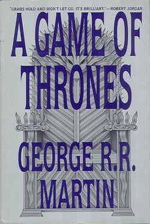
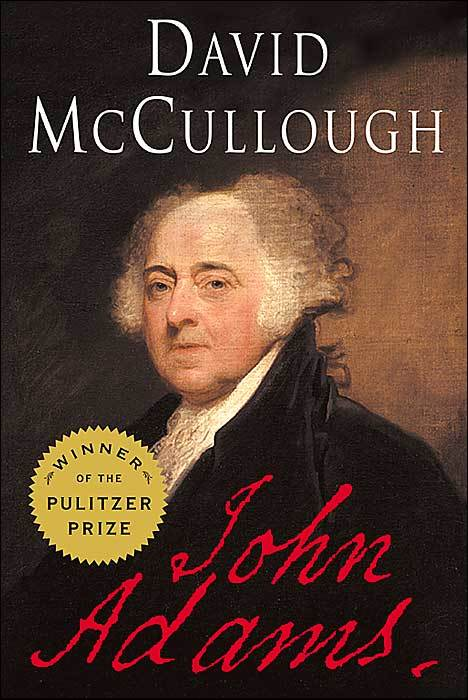

DRAMA
George R. R. Martin
The story revolves around the northern House Forrester, rulers of Ironrath, whose members, including the five playable characters, attempt to save their family and themselves after ending up on the losing side of the War of the Five Kings.
William Shakespeare
It is the story of two lovesick teenagers whose relationship is—here's the source of the tension—forbidden. Both Romeo Montague and Julet Capulet come from wealthy families in the kingdom of Verona (in our Italy), but the families have been fighting bitterly for years.
Henrik Ibsen
An American tycoon lies dead in his compartment, stabbed a dozen times, his door locked from the inside. One of the passengers is none other than detective Hercule Poirot. On vacation. Isolated and with a killer on board, Poirot must identify the murderer—in case he or she decides to strike again.
Author:Jon Meacham
Team of Rivals: The Political Genius of Abraham Lincoln is a 2005 book by Pulitzer Prize-winning American historian Doris Kearns Goodwin, published by Simon & Schuster. The book is a biographical portrait of U.S. President Abraham Lincoln and some of the men who served with him in his cabinet from 1861 to 1865.
George R. R. Martin
The story revolves around the northern House Forrester, rulers of Ironrath, whose members, including the five playable characters, attempt to save their family and themselves after ending up on the losing side of the War of the Five Kings.
William Shakespeare
It is the story of two lovesick teenagers whose relationship is—here's the source of the tension—forbidden. Both Romeo Montague and Juliet Capulet come from wealthy families in the kingdom of Verona (in our Italy), but the families have been fighting bitterly for years.
Henrik Ibsen
An American tycoon lies dead in his compartment, stabbed a dozen times, his door locked from the inside. One of the passengers is none other than detective Hercule Poirot. On vacation. Isolated and with a killer on board, Poirot must identify the murderer—in case he or she decides to strike again.
Author:Jon Meacham
Team of Rivals: The Political Genius of Abraham Lincoln is a 2005 book by Pulitzer Prize-winning American historian Doris Kearns Goodwin, published by Simon & Schuster. The book is a biographical portrait of U.S. President Abraham Lincoln and some of the men who served with him in his cabinet from 1861 to 1865.